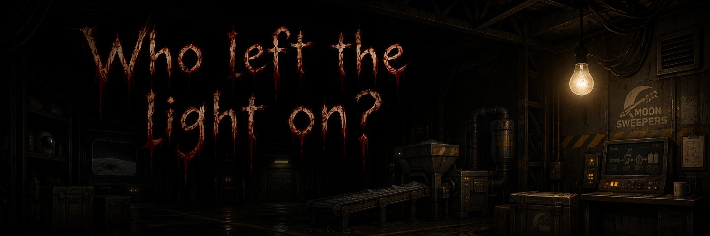

What it does
Helmet lighting
Off, Flashlight, or Night Vision comes back once the mode has settled.
Lights and suction
Each vehicle keeps its own lights and adjustable suction preference.
Boost lock
Left Shift toggles a per-vehicle boost lock that survives braking, stopping, and exiting.
In-game, with LunarLink
Its GitHub releases appear in LunarLink's F9 UPDATES tab for hot updates.
How it remembers
flowchart LR t["You change lighting or
a vehicle preference"] --> w{"State is ready?"} w -- "no (still changing)" --> t w -- "yes" --> s["Saved locally in
BepInEx/config/"] s -. "next launch or vehicle spawn" .-> r["The player or vehicle is ready"] r --> a["The saved preference
is restored"]
Settings
All four functional settings default to on. They appear in the expanded Who Left The Light On row in LunarLink and compatible mod-manager settings screens.
| Setting | What it does |
|---|---|
| Remember Helmet Lighting | Restores Off, Flashlight, or Night Vision. |
| Remember Vehicle Lights | Remembers each vehicle's lights independently. |
| Remember Vehicle Suction | Remembers each vehicle's adjustable suction setting independently. |
| Vehicle Boost Lock | Left Shift toggles persistent boost mode for the current vehicle. |
| Clear Remembered Vehicle Settings | One-shot reset: apply it once to clear stored vehicle lights, suction, and boost preferences. |
Install
Only you install it: it runs on your own game.
- Install BepInEx 6 and the Moon Sweepers patcherBepInEx 6.0.0-be.791 (Unity.IL2CPP, win-x64) and the MoonSweepers BepInEx Patcher; run the game once.
- Download itFrom Nexus Mods or the latest GitHub release.
- Unzip it into the game folder, with the game closedYou get
BepInEx/plugins/WhoLeftTheLightOn/WhoLeftTheLightOn.dll. A mod manager such as Vortex does this for you. - Start the gameThe BepInEx log says "Who Left The Light On? x.y.z loaded".
On its own, or hot with LunarLink
Who Left The Light On runs on its own: a normal BepInEx plugin. With LunarLink, a free plugin that loads plugins from BepInEx/hot/, it reloads and updates while the game runs.
| On its own | With LunarLink | |
|---|---|---|
| Install it in | BepInEx/plugins/WhoLeftTheLightOn/ | BepInEx/hot/WhoLeftTheLightOn.dll (the DLL straight in, not in a subfolder) |
| Updating | Download, close the game, unzip, start again | F9 → UPDATES → Update: installed in place, no restart |
| Turning it off | Remove the DLL, restart | F9 → HOT PLUGINS → Disable: unloaded from memory at once |
Not in both folders: a plugin in both would load twice, so LunarLink refuses the hot copy. A new hot plugin starts off: turn it on in F9 → HOT PLUGINS → Enable.